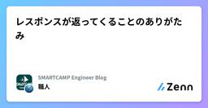
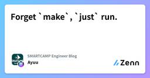
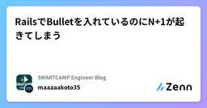
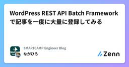
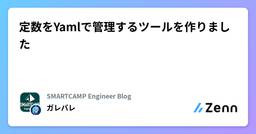

SMARTCAMP Engineer Blogのフィード
https://zenn.dev/p/smartcamp
SMARTCAMPに所属するエンジニアの個人記事を集めています。 記事の内容は個人の見解であり、社内でのレビュー等は行っておりません。
フィード

レスポンスが返ってくることのありがたみ
SMARTCAMP Engineer Blogのフィード
今回のお話ブラウザ → フロントエンドサーバー → バックエンドサーバー → たまに別のAPIサーバー という構成で、ブラウザからあるURLにリクエストを送信したところ、504 Gateway Timeout がレスポンスとして返ってきたときのトラブルシューティングです。 先に3行まとめレスポンスが返ってこないことだってたまにあるよセキュリティグループに通信が弾かれると、レスポンスは返ってこない他のAPIへの通信は適切にタイムアウト時間を設定しよう ECS で稼働する環境フロントエンドサーバー と バックエンドサーバー をまとめて1つのサービスタスクとしていた...
1日前

Forget `make`, `just` run.
SMARTCAMP Engineer Blogのフィード
!この記事はSMARTCAMP Advent Calendar 2025 の5日目の記事です。 ## はじめにWeb開発の現場で Makefile をタスクランナーとして使用している所は今でも少なくないと思います。が、しかし Makefile は本来C、C++のコンパイルなどのビルド作業での使用を想定されたツールであり、タスクランナーとして使用するとどうしても苦しい場面に遭遇することがあります。コマンド名と同名のファイル名が存在すると実行されない（.PHONY が必要）tab によるインデントが必須引数を渡すのが一癖ある ( make task ARG=hoge など...
2日前

RailsでBulletを入れているのにN+1が起きてしまう 1
1
SMARTCAMP Engineer Blogのフィード
!この記事はSMARTCAMP Advent Calendar 2025の4日目の記事です。年末に差し掛かりバタバタしてきましたね。さて、今回は弊社のアドベントカレンダーの4日目としてRailsでBulletを使っているのにN+1が起きてしまうという悲しい事象をしていきます。Railsユーザーには当たり前かもですが、個人的にやられたので温かい目で見てください... Bulletとはhttps://github.com/flyerhzm/bulletBulletとはN+1が起きているときに教えてくれるgemです。READMEにも書いてある通り、eager loading...
3日前

WordPress REST API Batch Frameworkで記事を一度に大量に登録してみる 1
SMARTCAMP Engineer Blogのフィード
WordPressで大量のコンテンツを投稿・更新する機会があり、REST APIで1件ずつ入れていると結構時間がかかった。そこで色々調べていると、複数のAPIをまとめて送るエンドポイントがあったのでそれを使ってみたのでクセも含めてまとめる。結論正直古く、ドキュメントもほぼ見当たらなく不安はあるものの記事の引っ越しや大量のインポートを行う時には使えそうだった。 使ったものWordPress 5.6（2020年12月リリース）で導入された REST API Batchというもの/wp-json/batch/v1ソース（公式発表）https://make.wordpress...
5日前

定数をYamlで管理するツールを作りました
SMARTCAMP Engineer Blogのフィード
はじめにCLIをツールを作ったので感じていた課題を共有しつつ記事を書いてみようと思いました。こちら成果物のリンクになります。https://www.npmjs.com/package/@garebare/shared-constants どういうツールかバックエンドとフロントエンドの言語が別だが共通の定数を持っておきたい場合に使うツールになります。下記のようなYamlから複数の言語向けに定数が定義されたファイルを出力することができます。format: shared-constants //他のフォーマットが実行されるのを防ぐためconstants: values...
6日前

アーキテクトカンファレンス2025 参加報告
SMARTCAMP Engineer Blogのフィード
はじめにこんにちは！りゅうです。先日行われたアーキテクトカンファレンス2025の2日目(11/21)に参加してきました！セキュリティ、SRE、データ分析基盤、レジリエンスなど、普段あまり触れない分野のセッションがたくさんあり、新卒1年目の自分にとって刺激的な1日でした。各セッションで印象的だったことを簡単にまとめていこうと思います！https://architecture-con.findy-tools.io/2025 生成AI時代の新・セキュリティ脅威：アーキテクトはいかにOSS依存とコード生成リスクに立ち向かうかこのセッションは近年のAIの普及に伴う新たなセキュリテ...
11日前
開発するのにPCがない！そんなあなたにGitHub Codespaces + VS Code
SMARTCAMP Engineer Blogのフィード
はじめにこんにちは、りゅうです！先日、会社の先輩方と一緒に開発合宿に参加したのですが、そこで、ありえないポンコツをやらかしました。それが、周辺機器・参考になりそうな技術書・マウス・キーボードを用意しているにも関わらずPCを忘れるという大失態を犯しました。その中でも意外な発見があったので記事を書きます！今回の開発合宿でやっていたことについてはこちらの記事をご覧ください！ 実はスマホでもコードが書けるって知ってますか？今回、自分はPCを持ってくることを忘れたのですが、スマホでコードを編集するということをやってみました。最初に言っておきます、かなり不便だったのでおすす...
14日前
【逆リファクタリングバトル】あえて、FizzBuzzを汚してみる
SMARTCAMP Engineer Blogのフィード
はじめにこんにちは、りゅうです！先日、会社の先輩方と「逆リファクタリングバトル」というイベントに参加しました。これは、あえてよくない設計のコードを書くことで、きれいなコードを書くことの大切さを学ぶというもです。イベント当日は、PCを持ってくるのを忘れるという大失態を犯し、劣悪な環境での開発を余儀なくされました。「クソコードはクソ開発環境から生まれる？」という言葉が、まさにぴったり当てはまる状況でしたね。この辺りの詳しい話は別の記事で！他の参加者の作品はこちらから！主催の方がまとめてくれています！ 僕がやった逆リファクタリングざっくり、自分がやった逆リファクタリングの内...
14日前
あなたもクソコードの世界に触れてみませんか？？ - 逆リファクタリングバトルのイベント報告 -
SMARTCAMP Engineer Blogのフィード
「コードは綺麗に書くべき」そんな呪いにかかっていませんか？「可読性が正義」「保守性が命」確かにその通り。でも、そこに縛られすぎて“自由に書く楽しさ”を忘れていないでしょうか。コードなんて、本来もっと遊んでいい。ときには破壊的に、意味不明に、カオスな方向へ振り切ってみてもいい。今日はその逆方向へ思いっきり振り切る遊び「逆リファクタリングバトル」というイベントをしたので、その内容を共有しようと思います。Hello. クソコード!! はじめにこんにちは。初めまして。まるべいじ（malvageee）と申します！先ほど、少し刺激的な言葉で始めましたが、この記事は「汚いコード...
20日前
AIにConventional Commitsさせたら最強なんじゃない？
SMARTCAMP Engineer Blogのフィード
はじめにCursor 2.0で登場したComposerに心を奪われています。（あまりZenn上では話題になっていないみたいですが）記事の趣旨から逸れてしまうので多くは語りませんが、Claude CodeやCodexを使って速度に不満を感じたことがあれば一度CursorのComposerを試すことをおすすめします！今回はそんなComposerの強みを活かしたカスタムコマンドを1つ紹介したいと思います。 Conventional Commitsとは人間と機械が読みやすく、意味のあるコミットメッセージにするための仕様https://www.conventionalcom...
23日前
RedisからValkeyに移行しよう
SMARTCAMP Engineer Blogのフィード
Valkey とはValkey は、オープンソースのインメモリ型キーバリューストアです。Redis OSS と互換性を保ちつつ、ライセンスや拡張性、性能面での特徴を持たせたプロジェクトです。Valkey が登場した背景 Redis OSS ライセンス変更Redis 社は、従来 BSD ライセンスを採用していた Redis コア部分について、より制限の強いライセンス（RSALv2、SSPL など）への移行を発表しました。これにより、商用利用者やクラウドベンダーが従来の通り自由に改変・再配布を行うことが難しくなる懸念が出てきました。 OSS コミュニティ／クラウドベンダーの...
1ヶ月前
RailsからOpenAI APIなどを呼んでストリーミングレスポンスを少しずつ処理する方法（HTTParty）
SMARTCAMP Engineer Blogのフィード
近頃寒くなってきており、非常に過ごし易い季節になりましたね。さて今回はHTTPartyというgemを使った際にstreamingで受け取ったレスポンスを少しずつ処理する方法についてシェアしたいと思います！https://github.com/jnunemaker/httparty やりたいことやりたいことは以下です。Railsで動いているサーバーからOpenAIなどの生成AIを呼びたいレスポンスに時間がかかることが考えられるため、少しずつRailsサーバーからレスポンスを返したいリクエストはHTTPartyで送りたいOpenAIなどの生成AIはstreamingでレ...
1ヶ月前
課題解決のためにどう動くかの選択肢は複数あるよという反省
SMARTCAMP Engineer Blogのフィード
まえがき以前、とある課題がありその原因がビジネス向けのドキュメントが整っていないことだと思い、みんなでドキュメントを書こうとオーナシップを取ったことがありました。しかし、そもそもドキュメントが正しい解決方法なのか、他にもっと良い方法があるのではないかという提案した案が正しくなかったという失敗をしてしまいました、その時にすべきだったことを書きのこしておきます。 課題解決以前の選択肢上記失敗の原因は課題提案以前の選択肢を認識していなかったことだと思っています。課題に対する動き方として下記に具体的に選択肢を2つ上げています、どちらにもメリット・デメリットが存在しその他にも方法が...
2ヶ月前
HTMLメールのCSSデザインで詰まったので、Claude君とメールクライアントのCSS対応状況を徹底調査
SMARTCAMP Engineer Blogのフィード
HTMLメール開発者必見！メールクライアントのCSS対応状況を徹底調査初めてZennの記事を書きます！スマートキャンプでエンジニアとして働いています！お手柔らかに... はじめに開発のあるタスクでHTMLメールに関わる開発を行うことになり、その際に少し詰まってしまいました...ローカル環境でCSSのスタイリングの問題はなかったはずがGmailなどの他のメールクライアントで見ると、「アレっ、おかしい...」ってなっちゃいました。今後も対応箇所によっては再度HTMLメールを触る可能性は十分にあり得ると思い、この際に調べてみようということで調査してみました！HTMLメール...
2ヶ月前
ECS コンテナセキュリティのベストプラクティス
SMARTCAMP Engineer Blogのフィード
はじめにコンテナ技術の普及により、Amazon Elastic Container Service (ECS) などのコンテナオーケストレーションサービスを利用したアプリケーション開発が一般的になってきました。本記事では、AWS の公式ドキュメントを基に、ECS タスクのコンテナセキュリティについてベストプラクティスを確認していきたいと思います。 ECS コンテナセキュリティのベストプラクティス 1. 最小限のイメージを作成するか、distroless のイメージを使用するコンテナイメージに不要なバイナリを含めないようにすることで、攻撃を最小限に抑えることができます。...
3ヶ月前
RDSをKMSで暗号化する目的
SMARTCAMP Engineer Blogのフィード
RDS を KMS で暗号化するのは一般的ですが、そもそも暗号化をする目的をあんまり気にしたことがなかったので、自分なりに調査した結果をまとめました。 RDS で KMS が守る脅威 KMS で防げるものRDS 環境で KMS 暗号化を使用することで、データベース固有の脅威から重要なデータを保護できます。 物理的脅威データセンターからのハードディスク盗難、サーバーへの物理的侵入、スナップショット、自動バックアップファイルなどの物理的な漏洩からデータを保護することができます。 クロスアカウントでの漏洩開発環境へ本番環境のスナップショットを共有したとしてもKMSキーを共...
4ヶ月前
怠惰なHomebrewユーザーでもNixを使いたい!!
SMARTCAMP Engineer Blogのフィード
はじめに最近巷で話題のNix。耳にする頻度がだんだん増えてきました。何やらNixを使うとHomebrewとは違って宣言的にパッケージやmacOSの設定を管理できるらしいじゃないですか。奥が深いらしいNixですが様々な記事を参考にしつつ怠惰な自分でもNixを使って楽にパッケージやOSの設定を管理できたので書き残しておきます。宣言的に管理したいというモチベーションだけでNixを使用しているため本来の思想や使用用途から外れたことをしているかもしれません。ご容赦くださいmm自分は怠惰なのでNixとは何か、Nixの使い方についての詳細は省きます!!👆が分かっていなくても楽に管理でき...
4ヶ月前
create_or_find_byの注意点
SMARTCAMP Engineer Blogのフィード
もはや暑い以外の言葉が見つからずクーラーという反転術式を覚えたい今日この頃です。さて本日はRails 5.1.5から導入されてたと言われているcreate_or_find_byを用いる際の注意点をシェアハピしていきたいと思っています。(ほぼコードコメントに書かれていることです...)https://railsdoc.com/page/create_or_find_byhttps://github.com/rails/rails/blob/984c3ef2775781d47efa9f541ce570daa2434a80/activerecord/lib/active_record/r...
4ヶ月前
TDD勉強会をやってみた
SMARTCAMP Engineer Blogのフィード
最近は暑くて街中で日陰の争奪戦をしています。信号待ちなどでは必ず日陰に陣取りたい派です。さて今回は社内で1年ほど前に開催したTDD勉強会を開催した備忘録を公開しようかなと思います!!昨今の生成AIの進歩はすごいですが、そんな中でもTDDの考え方が使えると思っています。主に「TDDとは何か」「TDDで開発をすると何がいいのか」を社内で普及するために行なったものです!! アジェンダ当日の以下の流れで進めました。TDDの概要を知るグループ分け実践 TDDの概要を知る世の中にはたくさんのTDDの資料がありますが今回の勉強会では以下のt-wadaさんの資料を参考文献とし...
4ヶ月前
Amazon Bedrockのコストがざっくり日本円でいくらなのかCloudWatch Logsで確認する
SMARTCAMP Engineer Blogのフィード
この記事はBedrockのコスト計算をCloudWatchでできるようにまとめてみました。 事前準備まず公式ドキュメントを参考にBedrockのログをCloudWatch Logsに出力する設定をします。https://docs.aws.amazon.com/ja_jp/bedrock/latest/userguide/model-invocation-logging.html#setup-cloudwatch-logs-destination モデルの料金の確認https://aws.amazon.com/jp/bedrock/pricing/今回はClaude...
4ヶ月前